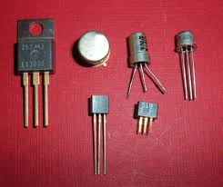

In the late 1950s, the Second Genration Computers were intoduced. Second
Genration computers used transistors in place of vacuum tubes.
Features of Second Genration Computers:
They used Transistors.
They used Assembly language.
The cost got reduced.
The size became smaller.
They produced a lot of heat.
The operating speed became faster.
IMB 140, MARK III, and LEO are the examples of second genration computers.
The transistors were far superior than vacuum tubes that allowed computers.
became smaller, faster and more reliable than the first genration computers.

Transistors